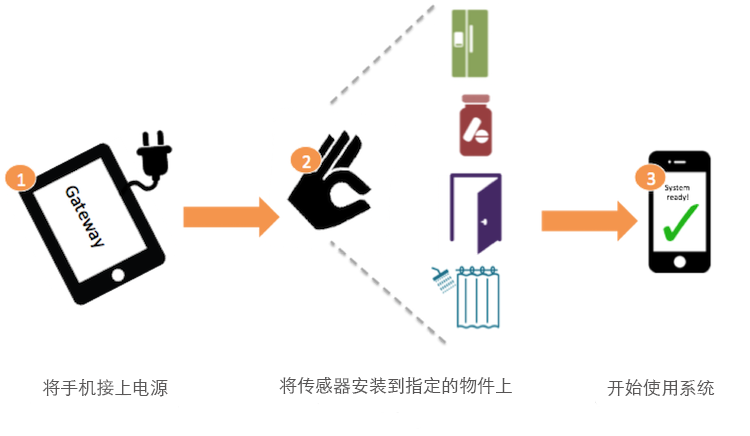

Installation and set up
Setting upSetting up your SilverLink system is really easy! Just plug your gateway into a power source and place your sensors around the house. Once you switch on the power, your system is ready for use. No Internet or additional setup is required.

Place activity sensors on any object of your choice, e.g., refrigerator door, pillbox, chair, etc. The location of the sensor can be used to monitor a specific application as is shown in the table below:
| Recommended objects to attach the sensor | Use cases |
|---|---|
| Pillbox | the user has taken his/her medication |
| Refrigerator Door | the user has eaten a meal |
| Shower Curtain | the user has taken a shower |
| Front door | the user has left the house at all during the day |